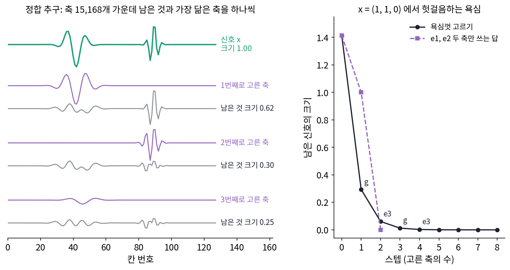
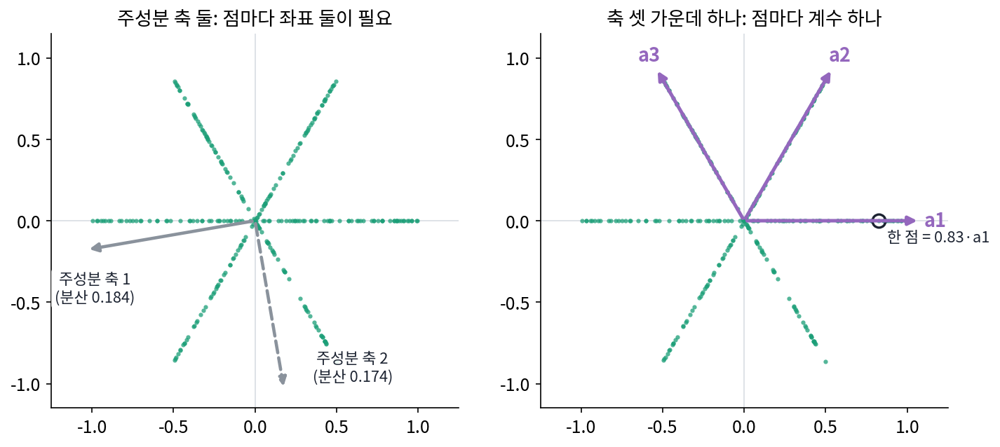
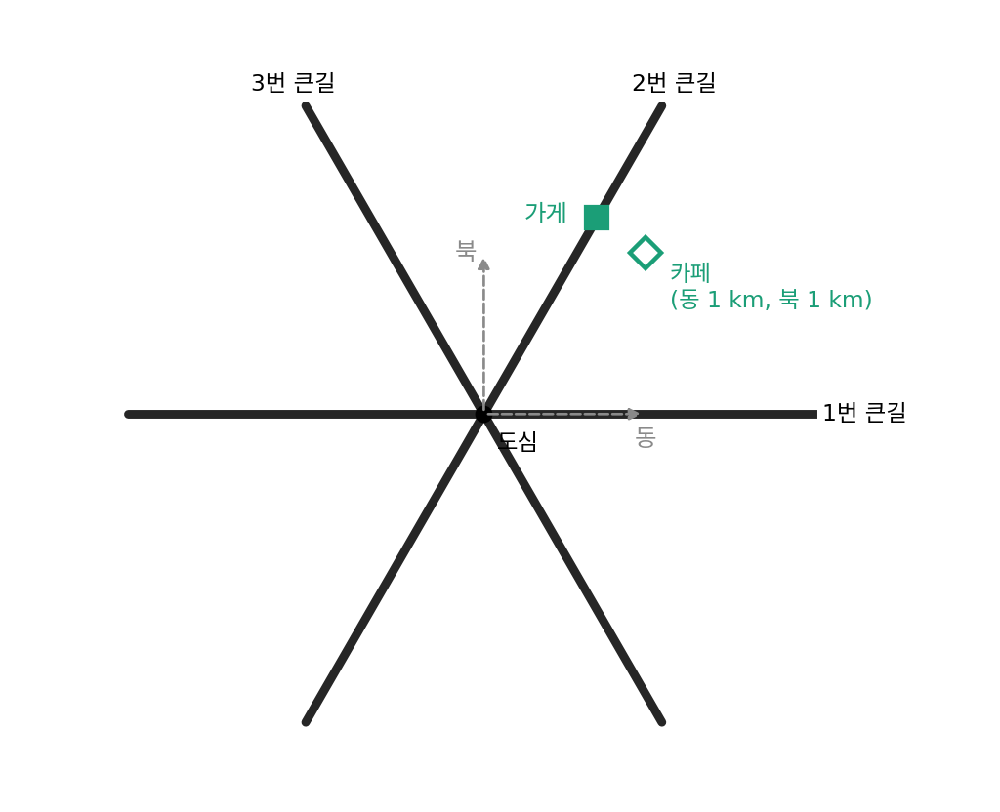
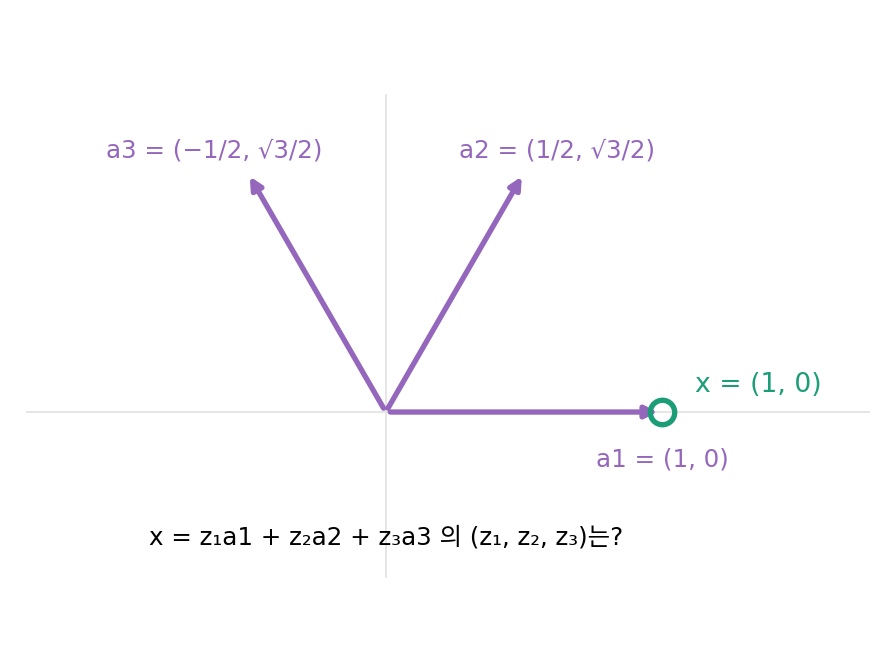
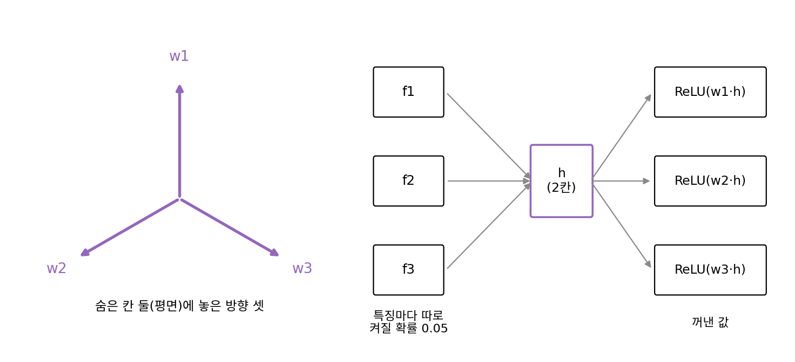

희소 코딩: 축은 많이, 쓰는 축은 몇 개만
이 장의 물음
자료에 규칙이 있으면 짧게 적을 수 있는데, 가장 단순한 규칙은 자료가 평평한 면 하나 근처에 모여 있는 것이다. 그러면 분산이 큰 방향 몇 개(주성분 축)를 골라 점마다 그 축의 좌표만 적으면 된다. 그런데 자료가 면 하나에 모여 있지 않고, 서로 다른 방향의 직선 여러 개에 나뉘어 놓여 있다면 어떨까? 직선 하나하나는 1차원인데, 그 직선들을 다 품는 평평한 면은 훨씬 넓어야 한다.
언어 모델의 속을 들여다본 연구자들도 비슷한 일을 겪었다. 뉴런 하나의 값이 언제 커지는지 모아 보면, 서로 관계없어 보이는 여러 문맥에서 함께 커지는 일이 흔하다. 2023년의 한 연구가 들여다본 작은 언어 모델에서는 뉴런 하나가 학술 인용, 영어 대화, HTTP 요청, 한국어 글에 함께 반응했다. 뉴런 하나가 뜻 하나를 맡는다면 이런 일이 없어야 한다. 모델이 뉴런 수보다 많은 「뜻」을 담고 있고, 뜻마다 뉴런들을 섞은 방향 하나를 쓰고 있는 것일까? 그렇다면 그 방향들은 어떻게 찾아낼까?
- 자료가 직선 여러 개에 나뉘어 있으면, 주성분 축은 무엇을 놓칠까? 그런 자료는 점마다 숫자 몇 개로 적을 수 있을까?
- 축을 차원보다 많이 두면 같은 점을 적는 방법이 여러 가지가 된다. 그 가운데 무엇을 골라야 할까?
- 「0이 아닌 계수가 가장 적은 답」을 찾는 일은 계산이 감당될까? 감당되지 않는다면 무엇으로 대신할까?
- 축 자체를 자료에서 배울 수 있을까? 그 일이 언어 모델 속의 「뜻의 방향」을 찾는 일과 어떻게 이어질까?
희소 코드: 축은 넘치게, 쓰는 축은 몇 개만
평면 위의 점 300개가 원점을 지나는 세 직선 위에 놓여 있다고 하자. 직선은 0°, 60°, 120° 방향이고, 직선마다 점이 100개씩 −1에서 1 사이에 고르게 흩어져 있다(씨앗 0, 계산은 sources/sparse-coding/s1_star.py). 그림으로 그리면 꼭짓점이 여섯인 별 모양인 이 점들을 짧게 적고 싶다. 자료가 고르는 가장 좋은 평평한 면을 찾는 주성분 분석에 맡기면, 공분산의 두 고윳값이 0.184와 0.174로 거의 같게 나온다. 주성분 분석의 눈에는 이 별이 둥근 구름과 다르지 않다는 뜻이다. 첫 주성분 축 하나로 적으면 상대 제곱 오차가 0.487이라 거의 절반을 잃고, 축 둘을 다 쓰면 오차는 0이지만 점마다 좌표 둘을 적어야 한다. 그런데 눈으로 보면 어느 점이든 세 직선 가운데 하나 위에 있다는 분명한 규칙이 이 자료에 있다. 이 규칙을 적는 데 쓰려면 축을 어떻게 골라야 할까?
역사: 축이 너무 많을 때 어느 것을 고르나
신호처리에서는 오래전부터 신호를 정해진 축(푸리에 축, 웨이블릿 축)의 합으로 적어 왔다. 축 한 벌이 모든 신호에 잘 맞지는 않는다. 그래서 1990년대 초, 여러 벌의 축을 한데 모아 놓고 신호마다 잘 맞는 몇 개만 골라 쓰자는 생각이 나왔다. 말라(Stéphane Mallat)와 장(Zhifeng Zhang)은 1993년 「시간–주파수 딕셔너리로 하는 정합 추구(Matching Pursuits with Time-Frequency Dictionaries)」를 냈다. 이 논문은 자리와 길이와 진동수가 다른 짧은 물결 조각을 신호의 칸 수보다 훨씬 많이 모아 둔 딕셔너리(축을 모은 것, dictionary)를 썼다.
축이 칸 수보다 많으면 같은 신호를 적는 방법이 하나로 정해지지 않는다. 가장 적은 축을 쓰는 표현을 찾으려면 축의 묶음을 모두 견주어야 하는데, 축이 많으면 그 계산은 감당할 수 없다. 말라와 장은 그 대신 욕심껏 고르는 방법을 택했다. 지금 남은 신호와 가장 닮은 축 하나를 골라 그만큼 빼고, 남은 것과 가장 닮은 축을 다시 고르기를 되풀이한다. 몇 해 뒤 첸(Scott Shaobing Chen)·도노호(David Donoho)·손더스(Michael Saunders)는 이런 넘치는 딕셔너리로 신호를 쪼개는 방법들을 견주었다. 그들은 계수의 제곱합이 가장 작은 표현을 고르는 방법(틀의 방법), 욕심껏 하나씩 고르는 방법(정합 추구), 특별한 딕셔너리에서 가장 좋은 직교 축 한 벌을 고르는 방법을 나란히 놓았다. 표현이 하나로 정해지지 않는다는 것, 그래서 「어느 표현을 고를지」가 따로 정해야 할 물음이라는 것이 이 줄기의 출발점이다.


축이 칸 수보다 많으면 축 묶음을 다 해 보면 되잖아요. 지금 GPU면 금방일 것 같은데요.

묶음이 몇 가지인지부터 세어 볼까요? 축 하나하나를 쓰거나 안 쓰거나예요.

음, 축마다 두 가지니까 2를 축 수만큼 곱해요. 축이 1,000개면 2¹⁰⁰⁰… 이건 지금 GPU로도 안 되네요.

그럼 욕심껏 하나씩 고른 답이 가장 적은 축을 쓴 답이라는 건 어떻게 알았어요?
1993년에는 그걸 확인할 길이 없었어요. 묶음을 다 볼 수도 없었고, 욕심껏 고른 답이 가장 적은 축의 답과 같아지는 조건도 그때는 알려져 있지 않았어요. 말라와 장은 보장 없이 욕심껏 고르기를 택한 거예요.

축이 칸 수보다 많지 않고 서로 독립이면 표현이 하나로 정해지니까 고를 일도 없었겠네요. 축을 넘치게 둔 순간 고민이 생긴 거고요.
별 모양으로 치면 평면에 축 셋을 둔 거네요. 그럼 점 하나를 적을 때 셋 가운데 몇 개를 써야 짧아지는 거예요?
별 모양을 축 셋으로 적기
별 모양 자료로 돌아가자. 주성분 축 둘 대신 세 직선의 방향을 따라 놓인 길이 1인 벡터 a1, a2, a3(0°, 60°, 120° 방향)을 축으로 삼는다. 평면에 축이 셋이니 축이 차원보다 많지만, 그 대신 점 하나를 적을 때 세 축 가운데 그 점이 놓인 직선의 축 하나만 쓰면 된다. 예를 들어 (0.826, 0)은 0.826·a1이고, 300점 모두 이렇게 계수 하나로 오차 없이 적힌다.

얼마나 짧아졌는지 비트로 세어 보자. 좌표 하나를 8비트로 적는다고 하면, 주성분 축 둘로는 점 하나에 16비트, 300점에 4,800비트가 든다. 축 셋으로는 「몇 번 축인가」에 log₂ 3 = 1.585비트, 계수에 8비트이므로 점 하나에 9.585비트, 300점에 약 2,876비트다. 축 셋의 방향을 적는 비트(각도 셋을 8비트씩, 24비트)를 더해도 약 2,900비트로, 모델까지 적는 비트를 세는 최소 기술 길이의 셈에서도 축 셋이 이긴다.
직선 셋을 합쳐 놓은 모양처럼, 낮은 차원의 평평한 면 여러 개를 합쳐 놓은 것을 부분공간의 합집합이라 부른다. 자료가 이런 모양이면 면 하나(주성분 축 몇 개)로는 짧게 적을 수 없으므로, 대신 차원보다 많은 축을 모아 두고 점마다 그 가운데 몇 개만 쓴다. 이렇게 넘치는 딕셔너리에서 몇 개의 축만 골라 쓰는 표현을 희소 코드 (몇 개의 축만 쓰는 코드, sparse code)라 하고, 희소 코드를 찾는 일을 희소 코딩이라 한다. 축을 모은 행렬은 딕셔너리(dictionary)라 부르고, 그 열 하나하나를 문헌에서는 원자(atom)라 하지만 이 책은 그냥 축이라 부른다.
별 모양에서는 d = 2, m = 3, k = 1이다. 주성분 분석은 m ≤ d인 직교 축 몇 개를 모든 점이 함께 쓰지만, 희소 코드는 축을 d개보다 많이 두는 대신 점마다 다른 k개를 고를 수 있다. 축 셋 모두를 쓸 수 있게 열어 두면 평면의 아무 점이나 적는 방법이 끝없이 많아져서, 직선 위의 한 점도 축 하나로 적을 수 있지만 축 셋을 섞어서도 적을 수 있다. 그 많은 방법 가운데 무엇이 「계수가 적은」 쪽인지, 그리고 늘 쓰는 기준(제곱합을 가장 작게)으로 고르면 무엇이 나오는지는 아래 문제 2에서 직접 따져 보자.
ML에서: 차원보다 많은 특징을 담는 중첩
엘해이지(Nelson Elhage) 외의 「중첩의 장난감 모델(Toy Models of Superposition)」(2022)은 별 모양 자료와 같은 그림을 신경망 안에서 찾았다. 특징 다섯 개를 숨은 칸 두 개에 넣었다가 ReLU(음수를 0으로 바꾸는 함수)를 거쳐 다시 꺼내도록 작은 신경망을 학습시켰더니, 특징마다 켜질 확률이 5%로 드물 때 다섯 특징의 방향이 평면 위에 정오각형으로 놓였다. 차원보다 많은 특징을 서로 다른 방향에 겹쳐 담는 이 일을 그들은 중첩(superposition)이라 불렀고, 특징이 드물게 켜질수록 중첩이 일어난다고 보고했다. 큰 언어 모델에서 뉴런 하나가 왜 여러 뜻에 반응하는지를 중첩으로 설명하자는 생각이 중첩 가설이다. 별 모양으로 말하면 평면(뉴런 둘)에 직선 셋(특징 셋)을 담은 것인데, 드물게 켜진다는 조건이 왜 중요한지는 아래 문제 3에서 계산해 본다.
문제 1. 방사형 도로 도시의 주소
도심을 지나는 큰길 세 개만 있는 도시에서, 큰길 하나는 동서로 나 있고 나머지 둘은 그 길과 60°, 120°를 이룬다. 큰길 위의 가게 위치를 친구에게 알리려 한다. (가) 「동쪽으로 몇 km, 북쪽으로 몇 km」로 알리면 숫자가 몇 개 필요한가? 「몇 번 큰길, 도심에서 몇 km」로 알리면? (나) 큰길 번호를 비트로 적으면 몇 비트인가? (다) 큰길에서 벗어난 골목 안의 카페(동쪽 1 km, 북쪽 1 km)는 어떻게 알려야 하는가?

(가)는 동쪽, 북쪽 두 숫자요. 큰길로 말하면 번호랑 거리니까… 이것도 두 개 아니에요?
두 숫자가 같은 종류인가요? 동쪽 몇 km와 북쪽 몇 km는 어떤 값이든 될 수 있죠. 큰길 번호는요?

아, 번호는 셋 중 하나밖에 안 돼요. log₂ 3 = 1.585비트면 되니까, 실수 하나에 1.6비트쯤 붙은 거네요. 동쪽·북쪽은 실수가 둘이고요.
(다)의 카페는 어느 큰길 위에도 없어. 동서 큰길과 60° 큰길 두 방향을 섞어야 해. 계산하면 동서로 0.423 km 가고 60° 큰길 방향으로 1.155 km 가는 거야. 숫자 둘이 다 필요해.

그래요. 큰길 위라는 규칙이 있을 때만 「번호 + 거리」가 짧아요. 규칙을 벗어난 점은 축 둘을 써야 하고요.

조별 과제 자료를 공유할 때 「3번 폴더 두 번째 파일」이라고 하면 짧은데, 아무 폴더에도 안 넣은 파일은 경로를 다 불러 줘야 하잖아요. 폴더가 큰길이네요.
문제 2. 축이 셋인 평면에서 한 점을 적는 방법
평면의 세 축 a1 = (1, 0), a2 = (1/2, √3/2), a3 = (−1/2, √3/2)로 점 x = (1, 0)을 z₁a1 + z₂a2 + z₃a3으로 적는다. (가) 가능한 (z₁, z₂, z₃)를 모두 적어라. (나) 그 가운데 계수의 제곱합이 가장 작은 것은? (다) 0이 아닌 계수가 가장 적은 것은? 두 답이 같은가?

이건 바로 (1, 0, 0)이죠. a1이 (1, 0)이니까요. 끝 아니에요?
그건 하나의 답이에요. 축이 셋이고 식은 둘(가로, 세로)인데, 답이 하나뿐일까요?
식을 세우면 가로는 z₁ + z₂/2 − z₃/2 = 1, 세로는 (√3/2)(z₂ + z₃) = 0이에요.
식은 둘, 모르는 수는 셋이에요. 세로 식부터 볼까요?
세로에서 z₃ = −z₂니까 z₂ = s라 두면 z₁ = 1 − s. 답은 (1 − s, s, −s)… s는 아무 수나 되네요. 직선 하나만큼 답이 있어요.
그럼 (나)는 제곱합 (1 − s)² + 2s²을 s로 미분하면… s = 1/3이에요. (2/3, 1/3, −1/3), 제곱합 0.667이요. (1, 0, 0)의 제곱합 1보다 작네요.

어, 근데 제곱합이 가장 작은 답은 계수 셋을 다 써요. (1, 0, 0)은 하나만 쓰는데요.

바로 그거예요, 민준 학생. 「가장 작은 제곱합」이라는 익숙한 기준이 무엇을 하는지 보이죠?

제곱은 큰 값을 크게 벌주니까, 계수 1을 한 축에 다 주는 것보다 셋에 나눠 주는 걸 좋아하네요. (다)의 답은 (1, 0, 0)이고, 두 기준이 서로 다른 답을 골라요.

그래서 「0이 아닌 계수가 적은 답」을 고르려면 제곱합이 아닌 다른 기준이 필요해요. 그 기준이 무엇일지는 열어 둡시다.

선형대수 시간에 과소결정 연립방정식을 풀면 유사역행렬로 최소 노름 해를 구했어요. 그게 늘 정답인 줄 알았는데, 그 해도 여러 해 가운데 「제곱합」이라는 기준으로 하나를 고른 거였네요.
문제 3. 숨은 칸 둘에 특징 셋
특징 셋을 숨은 칸 둘로 줄였다 되살리는 장난감 모델이 있다. 특징 i의 값 fᵢ를 120° 간격의 방향 wᵢ에 실어 숨은 칸 h = Σ fᵢwᵢ를 만들고, 꺼낼 때는 특징마다 wᵢ·h를 계산한 뒤 ReLU(음수는 0)를 씌운다. w1 = (0, 1), w2, w3은 w1을 120°, 240° 돌린 방향이다. (가) 특징 1만 1로 켜지면 꺼낸 값은? (나) 특징 1과 2가 함께 1로 켜지면? (다) 특징마다 따로 확률 0.05로 켜진다면, 켜진 경우 가운데 둘 이상 함께 켜지는 경우는 얼마인가?

(가)는 h = w1이고 내적이 1, −0.5, −0.5예요. ReLU를 씌우면 (1, 0, 0). 완벽하게 되살렸어요.
숨은 칸이 둘인데 특징 셋을 되살렸네요. 어떻게 가능했죠?
다른 특징 방향과의 내적이 −0.5로 늘 음수라서 ReLU가 지워 줬어요. 120°로 벌려 놓았으니 서로 끼어드는 값이 음수 쪽으로만 나오는 거고요.
(나)는 h = w1 + w2이고 내적이 0.5, 0.5, −1이라서 ReLU 뒤 (0.5, 0.5, 0)이에요. 1이 0.5로 줄었어요. 둘이 함께 켜지면 서로 깎아 먹네요.
그럼 이 모델은 쓸모가 없을까요? (다)를 계산해 봐요.
하나만 켜질 확률이 3 × 0.05 × 0.95² = 0.135, 둘 이상 켜질 확률이 0.00725예요.
켜진 경우 가운데로 따지면?
0.00725 ÷ (0.135 + 0.00725) = 5.1%예요.
특징이 자주 켜진다면 어떨까요? 켜질 확률이 0.5라면요?
그럼 둘 이상 켜질 확률이 0.5이고, 켜진 경우 가운데 57%가 겹쳐서 망가져요. 같은 모델인데 켜지는 빈도가 다 정하네요.
특징이 드물게 켜지면 거의 늘 하나만 켜지니까, 칸 둘로 셋을 담아도 손해가 작은 거네요. 별 모양에서 점마다 직선 하나 위에 있던 것과 같아요.
강의실 하나를 세 동아리가 요일을 나눠 쓰는 거랑 비슷해요. 모임이 드물면 겹칠 일이 거의 없는데, 셋 다 매일 모이면 못 쓰죠.